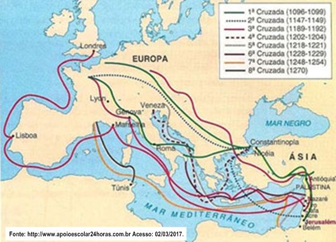

Introducción a las Cruzadas
Las Cruzadas fueron una serie de campañas militares organizadas por los reinos cristianos de Europa occidental entre los siglos XI y XIII. Su objetivo principal era recuperar Jerusalén y los lugares santos del control musulmán, aunque también perseguían fines políticos, económicos y religiosos.
Las Cruzadas templarias, una serie de conflictos militares y expediciones emprendidas en la Edad Media, representan uno de los capítulos más influyentes y controvertidos en la historia europea y del Medio Oriente. Durante varios siglos, estas campañas tuvieron un impacto significativo en la expansión del cristianismo, las relaciones entre Europa y el mundo islámico, y la configuración del mapa geopolítico de la región. A continuación, exploraremos las principales Cruzadas que marcaron este período histórico.
Principales Cruzadas
- Primera Cruzada (1096-1099)
- Segunda Cruzada (1147-1149)
- Tercera Cruzada (1189-1192)
- Cuarta Cruzada (1202-1204)
- Quinta Cruzada (1217-1221)
- Sexta Cruzada (1228-1229)
- Séptima Cruzada (1248-1254)
- Octava Cruzada (1270)
Motivaciones de los Cruzados
- Motivaciones religiosas
- Deseo de riquezas y tierras
- Espíritu de aventura
- Perdón de los pecados
- Intereses políticos y económicos
Comparativa de Cruzadas
| Cruzada | Fechas | Resultado |
|---|---|---|
| Primera Cruzada | 1096-1099 | Éxito: captura de Jerusalén |
| Segunda Cruzada | 1147-1149 | Fracaso: derrota en Damasco |
| Tercera Cruzada | 1189-1192 | Empate: pacto con Saladino |
| Cuarta Cruzada | 1202-1204 | Desvío a Constantinopla |
Importancia
Las Cruzadas marcaron un hito en la historia europea y mundial. Aunque su objetivo religioso no se logró completamente, dejaron huellas importantes en la cultura, el comercio, la arquitectura y las relaciones entre oriente y occidente.
A mediados del siglo XI, los turcos selyúcidas que profesaban el Islam suní se expandieron por Medio Oriente. Conquistaron Bagdad y extendieron su dominio hacia el Oeste. El Imperio bizantino, que conservaba la fe cristiana, estaba perdiendo territorios en Europa y Asia, y el emperador Romano IV decidió enfrentar a los turcos selyúcidas que amenazaban su predominio en Anatolia (actual Turquía).
Se reconocen ocho Cruzadas oficiales dirigidas a Medio Oriente y el norte de África, pero también fueron denominadas así otras guerras e iniciativas político-religiosas, como la Reconquista en la península ibérica, la persecución de los albigenses del sur de Francia (declarados herejes por la Iglesia católica) o los enfrentamientos con “paganos” y musulmanes en áreas del Báltico y Europa del Este.
Ubicación Geográfica
La mayoría de las cruzadas se dirigieron hacia Tierra Santa, especialmente Jerusalén. A continuación se muestra un mapa que ilustra la ruta general de los cruzados desde Europa hacia Asia Menor y el Levante.
